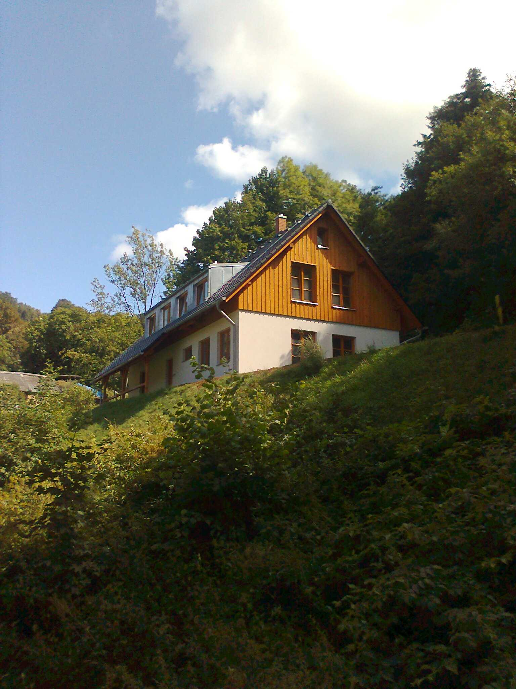
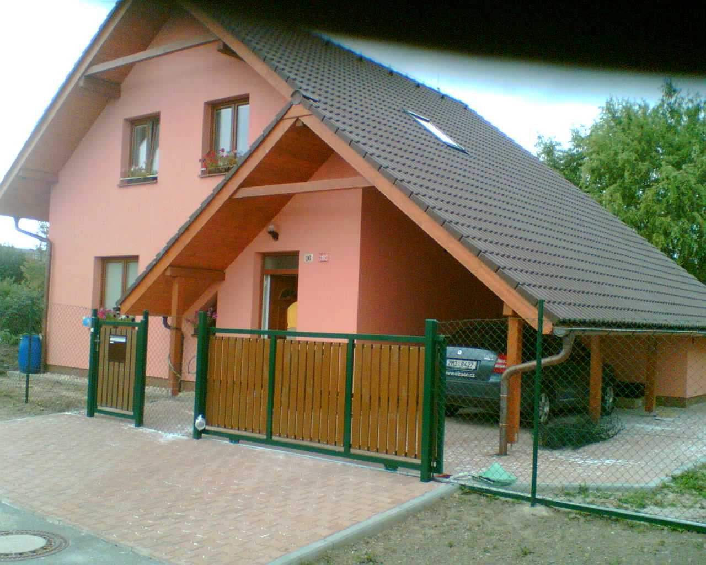
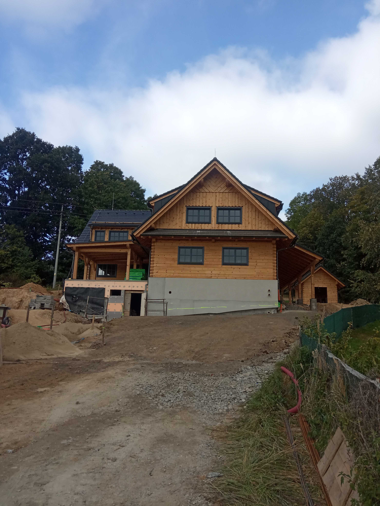
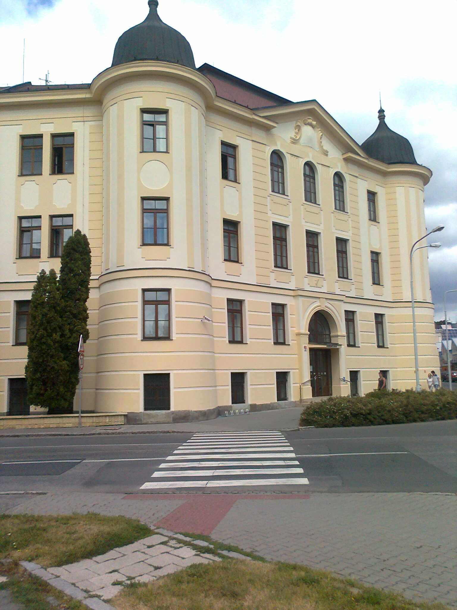
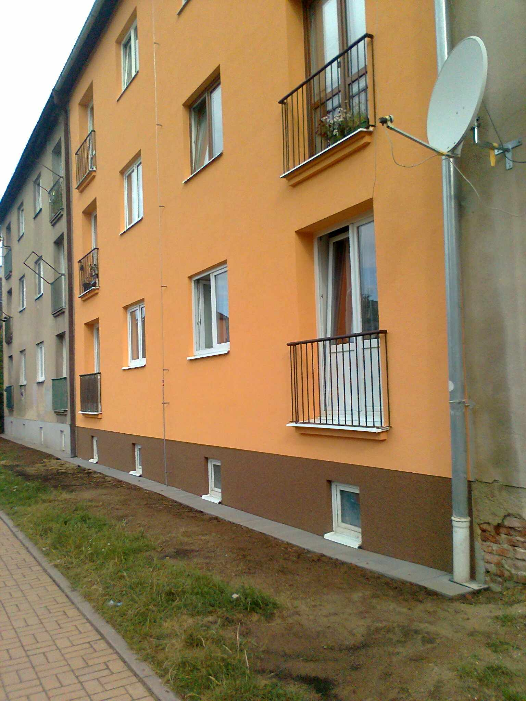
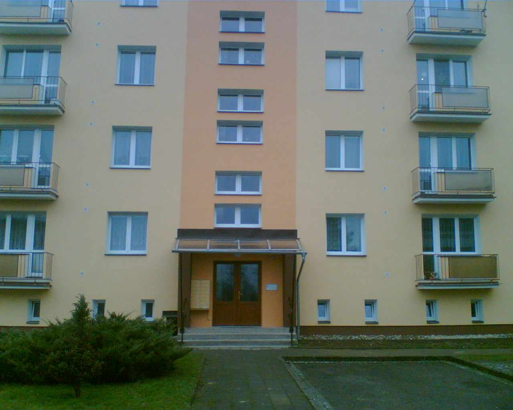
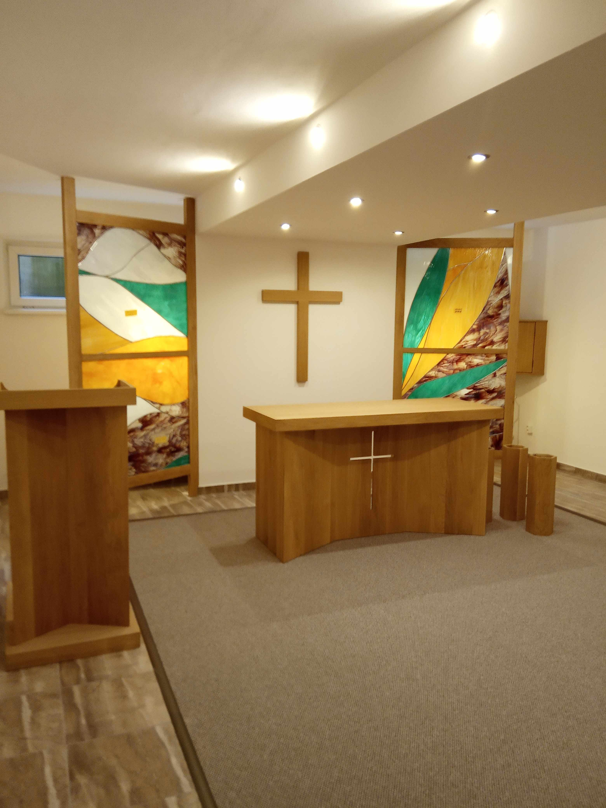
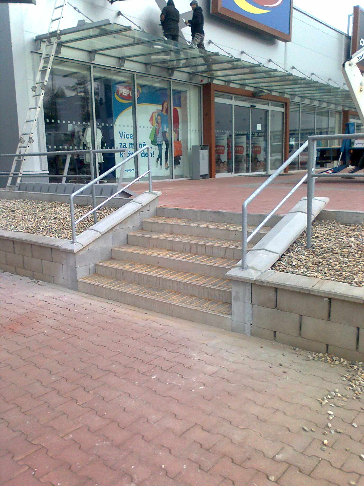
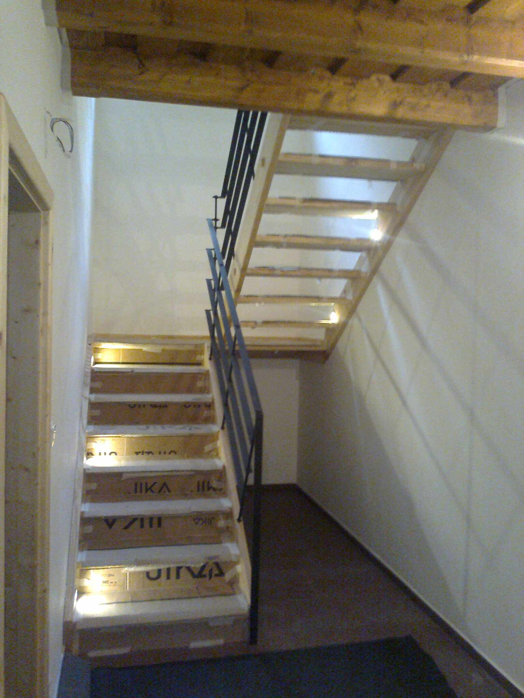

O nás
Stavební firma JPS Šumperk poskytuje veškeré stavební práce. Provádíme výstavbu rodinných domů na klíč, hrubé stavby, rekonstrukce, fasády, zateplování a izolace. Máme mnohaleté zkušenosti v oboru.
Ke každé zakázce přistupujeme individuálně, snažíme se zákazníkovi poradit a realizovat jeho přání tak, aby byl maximálně spokojen.
V případě zájmu o naše služby se na nás neváhejte obrátit. Rádi se s vámi na všem domluvíme.
Nabízíme:
- stavební práce, stavby na klíč
- výstavba rodinných domů
- novostavby, hrubé stavby
- rekonstrukce a opravy
- zateplení fasád
- zámková dlažba
- příjezdová komunikace
Vybavení firmy:
- zázemí pro staveniště
- vybavení pro zařízení staveniště
- drobná mechanizacve
- lešení a vrátky
Naše projekty
Rodinné domy a novostavby

Apartmány Maršíkov

Rodinný dům v Šumperku

Roubenka v Bukovici
Rekonstrukce, fasády a interiéry

Obnova fasády šumperského soudu

Fasáda a izolace ve Zborovské v Šumperku

Zateplení panelového domu v ulici Bratří Čapků

Zhotovení kaple v domě důchodců v Šumperku

Venkovní schody za Kauflandem v Šumperku
